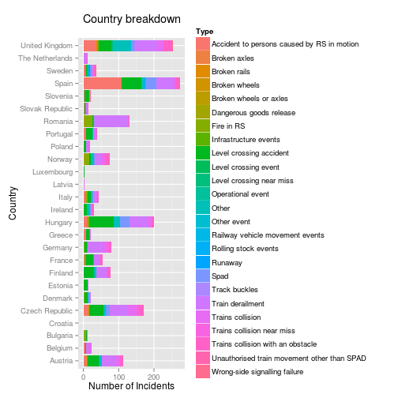

p <- ggplot(data = rail, aes(x = Country, fill = factor(Occurrence.type))) +
geom_bar(stat = "bin") + coord_flip() + guides(fill = guide_legend(title = "Type")) +
labs(title = "Country breakdown\n") + ylab("Number of Incidents") + xlab("Country")
